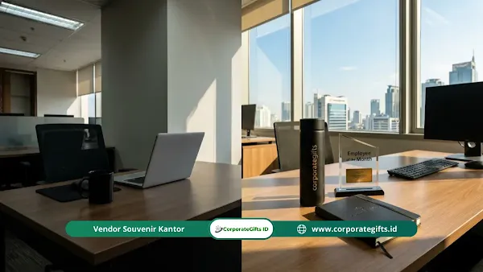

Corporate Gifts ID - Lima kesalahan paling umum dalam program recognition karyawan adalah kriteria yang tidak jelas, pelaksanaan yang tidak konsisten, minimnya keterlibatan pemimpin, bias distribusi penghargaan, dan fokus berlebihan pada hasil akhir tanpa mengapresiasi proses kerja. Program yang dirancang tanpa memperhatikan inklusivitas, transparansi, dan konsistensi justru dapat merusak kepercayaan karyawan serta memperburuk moral tim alih-alih meningkatkannya.
Bagi manajemen perusahaan dan divisi Human Resources (HR), menyusun sistem penghargaan karyawan menuntut keseimbangan antara pengakuan emosional yang tulus dan wujud fisik apresiasi yang membanggakan. Menghadirkan souvenir custom penghargaan dan paket hadiah yang tepat akan memperkuat dampak positif program recognition dalam jangka panjang.
Poin Kunci Program Recognition yang Efektif:
- Konsistensi Eksekusi: Program recognition yang berhenti di tengah jalan menciptakan sinisme yang lebih besar dibanding ketiadaan program.
- Transparansi Kriteria: Publikasikan indikator penilaian secara terbuka agar seluruh staf memahami standar pencapaian yang dihargai.
- Keterlibatan Kepemimpinan: Apresiasi langsung dari manajer lini pertama memiliki nilai emosional tertinggi bagi karyawan.
- Keseimbangan Hasil dan Perilaku: Akui kontribusi nilai-nilai kolaborasi harian di samping target angka finansial.
Mengapa Program Recognition Bisa Gagal Meski Berniat Baik?
Program recognition gagal bukan karena niat yang buruk, melainkan akibat kelemahan dalam desain arsitektur program, inkonsistensi pelaksanaan operasional, atau komunikasi internal yang minim kepada seluruh jajaran staf.
Fakta ini krusial untuk dipahami agar organisasi tidak merespons kendala dengan langsung membubarkan program, melainkan mendiagnosis akar masalah secara terukur. Menurut studi riset Society for Human Resource Management (SHRM), sebanyak 34% karyawan yang merasa program recognition di kantornya tidak adil melaporkan penurunan motivasi kerja yang drastis pasca-peluncuran skema tersebut.
Kesalahan 1: Kriteria yang Tidak Jelas atau Tidak Dikomunikasikan
Skema apresiasi dengan indikator yang ambigu membuat staf kebingungan memahami perilaku atau target apa yang sesungguhnya diapresiasi. Dampaknya, penganugerahan penghargaan terkesan acak, politis, dan memicu rasa ketidakadilan.
Tanda Kriteria yang Bermasalah di Lingkungan Kerja
- Karyawan kerap mempertanyakan siapa pihak yang berwenang menentukan penerima penghargaan.
- Penerima reward selalu berputar pada individu yang sama tanpa rotasi yang terlihat adil.
- Muncul persepsi bahwa kedekatan personal dengan pimpinan lebih menentukan dibanding prestasi kerja riil.
Solusi Praktis: Tuliskan dan publikasikan pedoman kriteria recognition secara eksplisit di portal internal kantor. Paparkan contoh perilaku nyata, metrik pencapaian, serta nilai budaya perusahaan yang menjadi dasar penilaian.
Kesalahan 2: Inkonsistensi dalam Pelaksanaan dan Jadwal
Program yang berjalan meriah pada bulan-bulan awal lalu perlahan redup dan menghilang adalah manifestasi inkonsistensi yang paling merusak kredibilitas manajemen di mata tim.
Inkonsistensi mengirimkan sinyal keliru bahwa penghargaan hanyalah formalitas seremonial sesaat. Karyawan yang awalnya antusias justru merasa kecewa mendalam ketika program mendadak ditunda atau dihentikan tanpa kejelasan.
Solusi Praktis: Tetapkan ritme penghargaan yang realistis (misalnya bulanan, kuartalan, atau tahunan). Tunjuk PIC pengelola program yang berdedikasi serta manfaatkan sistem pengingat otomatis untuk menjaga kedisiplinan jadwal penyerahan reward.
Kesalahan 3: Program Hanya Dijalankan HR Tanpa Keterlibatan Pemimpin
Apabila manajer dan pimpinan divisi pasif, karyawan akan memandang program tersebut semata-mata sebagai rutinitas administratif divisi HR tanpa bobot budaya perusahaan yang otentik.
Pengakuan yang paling berharga bagi seorang profesional adalah apresiasi yang disampaikan langsung oleh pimpinan lini pertama yang memahami tantangan kerja sehari-hari mereka. Manajer yang enggan memberikan apresiasi secara personal menciptakan celah motivasi yang tidak dapat ditutupi oleh sistem digital apa pun.
Solusi Praktis: Libatkan seluruh jajaran manajerial sejak tahap perancangan program. Jadikan partisipasi aktif dalam program apresiasi staf sebagai salah satu indikator kinerja kunci (KPI) kepemimpinan.

Kombinasi plakat penghargaan elegan dan gift set fungsional meningkatkan rasa bangga penerima apresiasi.
Kesalahan 4: Bias dan Ketidakmerataan Distribusi Recognition
Jika penghargaan secara konsisten diterima oleh kelompok tertentu, timbul persepsi bias yang melumpuhkan kohesi kerja sama tim secara menyeluruh.
Tiga Bias Utama yang Sering Muncul
- Bias Visibilitas (Proximity Bias): Karyawan yang sering bertatap muka fisik di kantor utama lebih mudah diapresiasi dibanding staf lapangan atau pekerja remote.
- Bias Kemiripan (Similarity Bias): Manajer cenderung memberikan pengakuan kepada bawahan yang memiliki kecocokan pola pikir atau gaya kerja serupa dengan dirinya.
- Bias Senioritas: Penghargaan secara tidak proporsional didominasi oleh pegawai senior, sehingga meredam motivasi talenta muda berbakat.
Solusi Praktis: Lakukan audit data penerima penghargaan secara berkala lintas divisi. Terapkan fitur peer-to-peer nomination di mana rekan kerja sejajar dapat saling mengajukan nominasi secara objektif.
Kesalahan 5: Hanya Mengakui Hasil Akhir dan Mengabaikan Proses
Skema yang hanya berfokus pada pemenang dengan angka penjualan tertinggi berisiko memupuk persaingan tidak sehat dan mengabaikan fondasi kerja keras harian seperti inisiatif perbaikan sistem, bimbingan rekan kerja, atau layanan prima kepada pelanggan.
Fokus berlebihan pada hasil akhir menciptakan tekanan psikologis tinggi yang berpotensi memicu kejenuhan kerja (burnout).
Solusi Praktis: Bentuk kategori penghargaan majemuk yang mencakup apresiasi proses, seperti penghargaan inovasi tim, kolaborasi lintas divisi, hingga keteladanan nilai-nilai inti perusahaan.
Matriks Evaluasi dan Rekomendasi Hadiah Recognition
Untuk memastikan program berjalan optimal, berikut tabel perbandingan kesalahan, dampak risiko, serta rekomendasi wujud apresiasi fisik yang sesuai dari lini produk souvenir kantor dan corporate gift:
| Kesalahan Desain | Dampak Negatif Tim | Langkah Solusi Manajerial | Rekomendasi Bentuk Hadiah / Cinderamata |
|---|---|---|---|
| Kriteria Ambigu | Karyawan bingung dan curiga ada favoritisme pimpinan. | Dokumentasikan panduan metrik kinerja dan nilai budaya secara transparan. | Plakat akrilik/kayu grafir laser bertuliskan alasan pencapaian spesifik. |
| Inkonsistensi Waktu | Program dianggap sekadar formalitas angin-anginan. | Kunci jadwal bulanan/kuartalan dengan sistem reminder terpadu. | Paket stationery premium, agenda kulit PU custom nama, pulpen metal. |
| Absennya Pimpinan | Apresiasi terasa hampa tanpa nilai emosional. | Pimpinan divisi wajib menyerahkan penghargaan secara tatap muka langsung. | Kartu ucapan personal tulisan tangan + exclusive gift box set. |
| Bias Distribusi | Karyawan remote/lapangan merasa terisolasi dan dianaktirikan. | Buka sistem nominasi peer-to-peer dan komite seleksi majemuk. | Tumbler vacuum stainless SUS 304 grafir nama + wireless powerbank. |
| Hanya Fokus Hasil | Persaingan tidak sehat dan mengabaikan kerja sama tim. | Buat kategori apresiasi perilaku nilai budaya dan kolaborasi. | Voucher belanja + paket apparel custom bordir korporat. |
Bagaimana Mendeteksi Tanda Program Recognition yang Bermasalah?
Sinyal peringatan dini biasanya tampak sebelum penurunan moral tim meluas ke seluruh divisi organisasi. Waspadai indikator berikut dalam survei berkala:
- Tingkat partisipasi atau pengajuan nominasi menurun drastis dari bulan ke bulan.
- Muncul keluhan sinis mengenai ketidakadilan dalam kotak saran atau survei kepuasan staf anonim.
- Fitur nominasi rekan kerja (peer nomination) tidak dimanfaatkan meskipun telah disediakan fasilitasnya.
- Tingkat pergantian karyawan (turnover rate) justru meningkat di divisi yang merasa diabaikan.
Setiap sinyal di atas merupakan momentum berharga untuk melakukan evaluasi menyeluruh dan memperkuat kembali komitmen perusahaan kepada kesejahteraan talenta terbaiknya.
Kesimpulan dan Konsultasi Pengadaan Hadiah
Program recognition yang berhasil bertumpu pada transparansi kriteria, konsistensi ritme, ketulusan pimpinan, dan relevansi bentuk cinderamata yang diberikan. Apresiasi yang dieksekusi dengan baik terbukti mampu melipatgandakan loyalitas, produktivitas, dan retensi talenta kunci perusahaan.
Konsultasikan kebutuhan plakat penghargaan, cinderamata apresiasi karyawan, dan custom gift set institusi Anda bersama tim spesialis CorporateGifts.ID. Dapatkan penawaran harga B2B resmi dan pratinjau mockup grafis gratis melalui formulir permintaan penawaran harga hari ini juga.